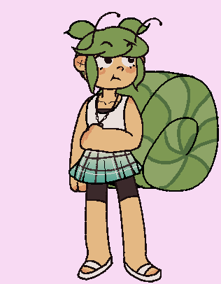
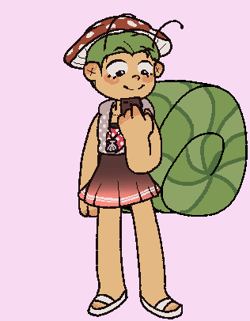
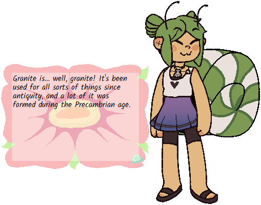
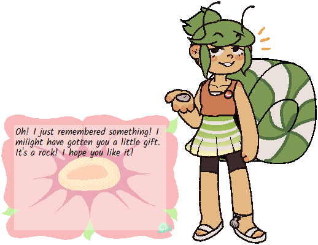
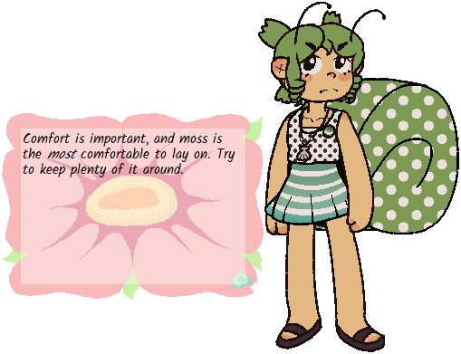

Snail

Snail is a snail girl made for Ghost Jam 2020 by myself, Changeside, and misubito. She uses the snail_balloon balloon.
Features
• Mix and match hairstyles
• Mix and match outfits
• Random dress-ups button
• Spookable
• Provides snail-centric advice
• Rock facts!
